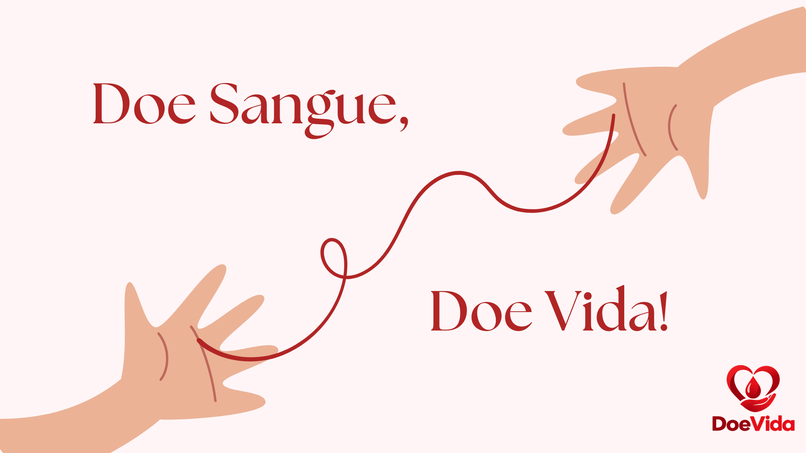
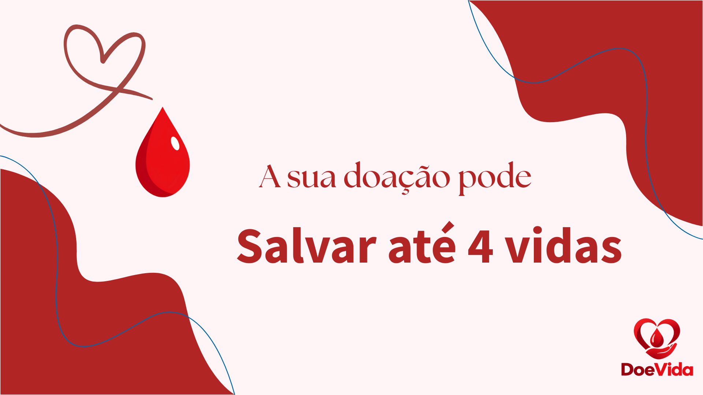
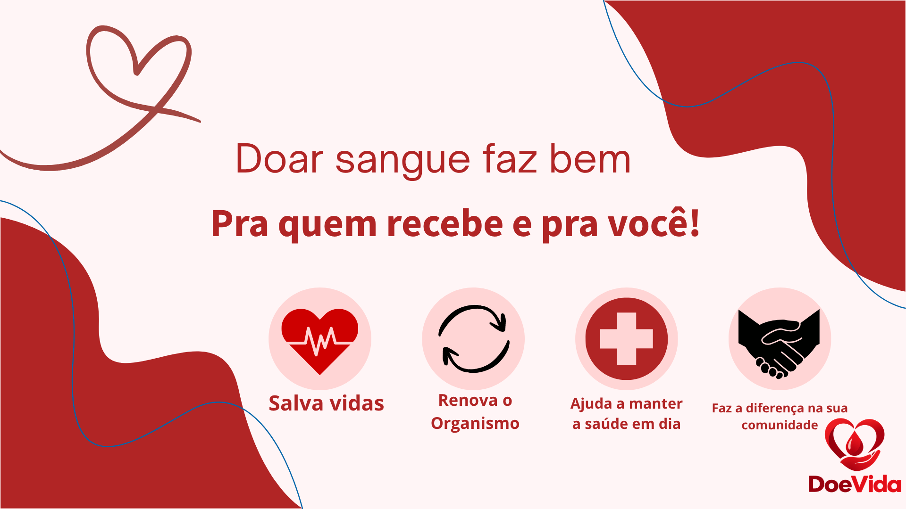
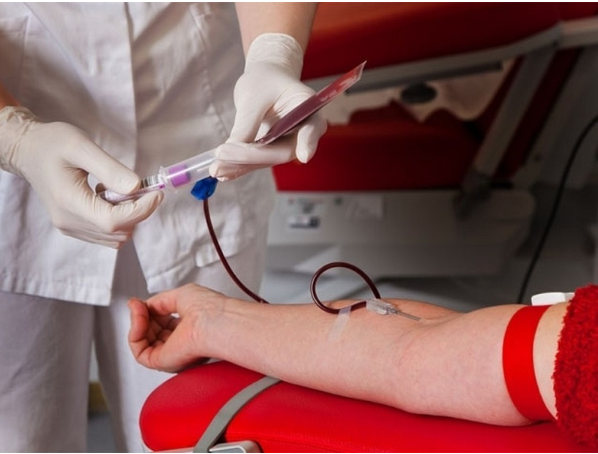

Marcos Vinícius enfrentou um tumor no sangue aos 17 anos e precisou de mais de 100 bolsas de transfusão.

Pessoas com 70 anos ou mais poderão ser doadoras, segundo o novo regulamento da hemoterapia no Brasil.
Tatuagens e procedimentos estéticos podem exigir espera de apenas sete dias...